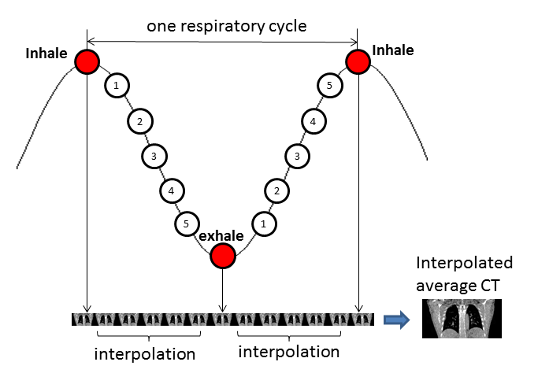
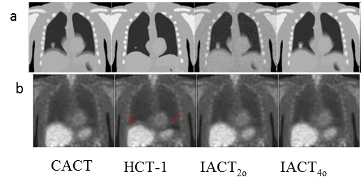
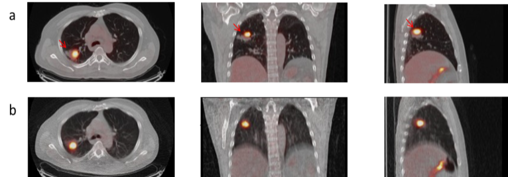
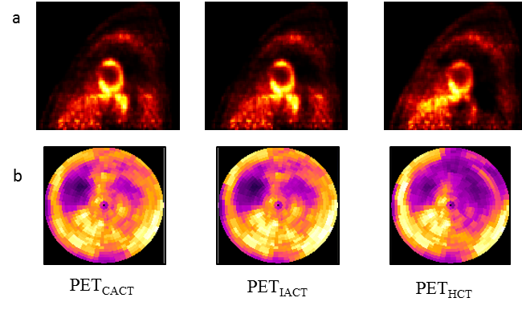

Interpolated Average CT for Thoracic PET/CT Attenuation Correction
We proposed a new attenuation correction (AC) method entitled “interpolated average CT (IACT)” for PET to reduce the respiratory misalignments in PET/CT. CT images of the desired phases, e.g., end-inspiration and end-expiration phases from a respiratory cycle are used to generate the velocity matrix using deformable image registrations such as the optical flow method (OFM) and B-spline algorithm. Interpolated phases are then obtained via linear and empirical/semi-patient specific sinusoidal functions. The IACT is obtained by averaging the original and interpolated phases (Fig. 1).
In the simulation study [1], The IACT modeled the respiratory motion similarly to the Cine Average CT (CACT) method. Less artifacts and better mismatching were observed in the IACT-AC image compared to conventional helical CT (HCT)-AC images (Fig. 2).
In the clinical study [2], we showed that it potentially improved PET reconstructed image quality as compared to the conventional HCT, with reduced respiratory artifacts and spatial mismatch, increased SUV of the lesions and lowered radiation dose. Capturing the extreme phases with the aid of an active breathing controller to generate IACT is a robust method for thoracic PET/CT AC, and is promising to improve the diagnostic accuracy of the thoracic tumors (Fig. 3).
Another cardiac study with IACT AC is ongoing and the preliminary results showed that IACT for cardiology application is promising to reduce artifactual defects (Fig. 4).
|  |
| Figure 1. Steps to generate IACT |
|  |
| Figure 2. (a) Different noisy attenuation maps for AC. (b) Their corresponding PET reconstructed images from noisy sinogram with 100 updates for maximum respiratory motion of 2 cm. Significant misalignment artifacts were observed for the PET images using HCTs for AC (red arrows). |
|  |
| Figure 3. Transaxial (left), coronal (middle), and sagittal (right) views of the fused PET/CT images for (a) HCT- and (b) IACT-AC for one patient. Red arrows indicated a lesion in the right upper lobe of the lung. |
|  |
| Figure 4. (a) Short-axis view of PET reconstructed images with different CT AC maps. (b) Bulls eye plot of the corresponding PET images. |
[1] Mok GSP, Sun T, Huang TC, Vai MI. “Interpolated Average CT for Attenuation Correction in PET – a Simulation Study”.
IEEE Transaction on Biomedical Engineering, vol. 60:7, pp. 1927-1934, 2013
[2] Sun T, Wu TH, Wang SJ, Yang BH, Wu NY, Mok GSP. “Low dose interpolated average CT for thoracic PET/CT attenuation correction using an active breathing controller”.
Medical Physics, vol.40, pp.102507, 2013.